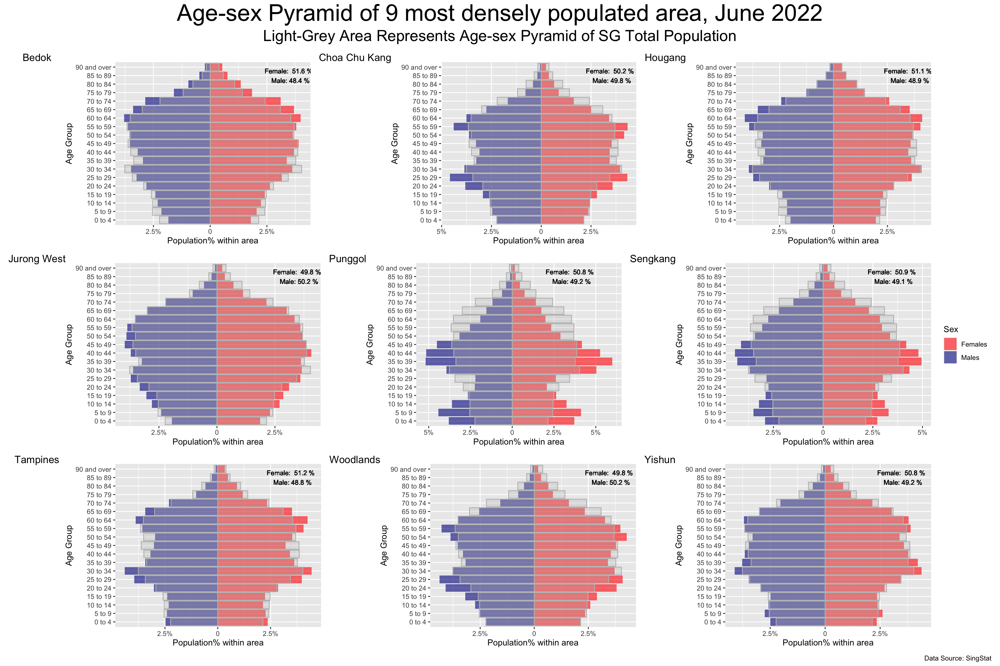

pacman::p_load(dplyr,tidyverse,ggplot2,patchwork)Take-Home Exercise 2
take-home exercise
Take-home exercise 2 is a review of take-home exersise 1 of our peers; critics and adjustment is done using R graphical packages, based on some of the areas of improvement in the work.
1. Overview
This take-home exercise is done based on a take-home exercise 1 submission prepared by a classmate. The peer submission will be critiqued in terms of clarity and aesthetics, and the original design will be remade using the data visualization principles and best practice learnt in Lesson 1 and 2.
The dataset used in take-home exercise 1 and 2 is downloaded from SingStat, and processed by RStudio tidyverse family of packages and visualized by ggplot2 and its extensions.
2. Getting Started
2.1. Import necessary packages
Before we get started, it is important for us to ensure that the required R packages have been installed.
R package pacman is used to load all required packages, and install them automatically if the packages are not installed. The code chunk below is used to install and load the required packages onto RStudio.
2.2. Import data
# read csv file
residents <- read_csv('../Data/residents_by_area.csv')Rows: 75696 Columns: 7
── Column specification ────────────────────────────────────────────────────────
Delimiter: ","
chr (5): PA, SZ, AG, Sex, FA
dbl (2): Pop, Time
ℹ Use `spec()` to retrieve the full column specification for this data.
ℹ Specify the column types or set `show_col_types = FALSE` to quiet this message.3. Critics and Makeover of Visualization using R
3.1. The original visualization
The original visualization prepared by our classmate shows a trellis plot containing age-sex pyramids of 9 different areas in SG using Tableau Desktop; in each grid, the right-hand side displays male population and the left-hand side displays female population, binned by age groups.

3.2. Critic: Clarity
Contrast colours are used for male and female population, which gives clear disinction.
Absolute value of population is used in the visualization; as different areas have different population sizes, it is difficult to compare the age structure against each other.
Value of every bar is shown in the graph, which can be distracting for the audience.
To give a clearer comparison to the overall population, each of the grid in the trellis can be overlay-ed on the age-sex pyramid of SG’s total population.
3.3. Critic: Aesthetic
The axes and titles are nicely labelled.
Instruction is stated above the checkboxs clearly, allowing users to change areas to be displayed.
3.4. Sketch of Propose Design
The proposed design is meant to keep the advantages of the original design, and mainly improve on clarity, so that more informative visualization can be produced.
Below is the sketch of the makeover design.
3.5. Visualization Makeover using R
Producing the background
Firstly, compute sum of population by sex and age groups.
SG_pop <- sum(residents$Pop)
res_total <- residents %>%
group_by(Sex,AG) %>%
summarise(total_pop=sum(Pop))%>%
#PopPerc, if female -> positive, if male -> negative
mutate(PopPerc=case_when(Sex=='Females'~round(total_pop / SG_pop, 4),
TRUE~-round(total_pop / SG_pop, 4)),
signal=case_when(Sex=='Females'~1,TRUE~-1))`summarise()` has grouped output by 'Sex'. You can override using the `.groups`
argument.#set age group level
res_total$AG <- str_replace_all(res_total$AG,'_',' ')
res_total$AG <- factor(res_total$AG, levels = unique(str_replace_all(residents$AG,'_',' ')), ordered=TRUE)
#levels(res_total$AG)
#head(res_total)Plotting of overall population. The object total_pop_plot will be used for background of plots of each of the areas. Notice that x-axis shows the percentage of population by age group and sex over total SG population.
total_pop_plot <- ggplot(res_total) +
geom_bar(aes(x=AG,y=PopPerc), stat = 'identity',
fill = "grey",alpha=0.6) +
coord_flip()
total_pop_plotProduce per area plot
Next, aggregate population by Planning Areas, Sex and Age Group.
res_by_area <- residents %>%
group_by(PA, Sex, AG) %>%
summarise(total_pop=sum(Pop))`summarise()` has grouped output by 'PA', 'Sex'. You can override using the
`.groups` argument.#set age group level
res_by_area$AG <- str_replace_all(res_by_area$AG,'_',' ')
# order age group properly
res_by_area$AG <- factor(res_by_area$AG, levels = unique(str_replace_all(residents$AG,'_',' ')), ordered=TRUE)
# levels after assigning order
levels(res_by_area$AG) [1] "0 to 4" "5 to 9" "10 to 14" "15 to 19" "20 to 24"
[6] "25 to 29" "30 to 34" "35 to 39" "40 to 44" "45 to 49"
[11] "50 to 54" "55 to 59" "60 to 64" "65 to 69" "70 to 74"
[16] "75 to 79" "80 to 84" "85 to 89" "90 and over"#res_by_areaDefine function that plot for one area, so that codes can be re-usable by inputing different area names as parameters.
plot_one_area <- function(area){
# area name as parameter
area_data <- subset(res_by_area, PA==area)
#compute total population
area_population <- sum(area_data$total_pop)
#compute population% by sex & AG over total population in the area
#use case_when to split male and female population to different size, by using +/- numbers
area_data <- mutate(area_data,PopPerc=case_when(Sex=='Females'~round(total_pop / area_population, 4),
TRUE~-round(total_pop / area_population, 4)),
signal=case_when(Sex=='Females'~1,TRUE~-1))
#compute female% and male%
malePop <- sum((subset(area_data, Sex=='Males')$total_pop))
femalePop <- sum((subset(area_data, Sex=='Females')$total_pop))
malePerc <- round(malePop/(malePop+femalePop)*100,1)
femalePerc <- round(femalePop/(malePop+femalePop)*100,1)
#sex-age pyramid of one area
p <- ggplot(area_data) +
geom_bar(aes(x=AG,y=PopPerc,fill = Sex),
stat = 'identity', alpha=0.6) +
scale_fill_manual(values=c("red","darkblue")) +
geom_bar(data=res_total, aes(x=AG,y=PopPerc), stat = 'identity',
fill = "grey",color = "grey", alpha=0.3) +
coord_flip() +
labs(x='Age Group', y= 'Population% within area',size=6) +
#change the negative labels to positive, and annotate with percentage sign
scale_y_continuous(breaks = c(-0.05, -0.025,0, 0.025,0.05), labels = c('5%','2.5%','0', '2.5%','5%')) +
#label male:female ratio to give additional information in the area
geom_text(size=3,
aes(18,0.035,label=paste("Female: ", femalePerc, '%', '\n','Male:', malePerc, '%')),
colour = 'black',alpha=0.5)
#return the plot
return(p)
}Combine Plots of 9 Areas
Finally, combine the background and foreground using Patchwork package, and annotate title and subtitle. The codes and final meke-over visualization is shown as follows:
#define the 9 selected areas
areas <- c('Bedok', 'Choa Chu Kang', 'Hougang',
'Jurong West', 'Punggol', 'Sengkang',
'Tampines', 'Woodlands', 'Yishun')
#initialize new list
graphs=list()
#combine the 9 plots
combined <- (plot_one_area(areas[1])+plot_one_area(areas[2])+plot_one_area(areas[3]))/(plot_one_area(areas[4])+plot_one_area(areas[5])+plot_one_area(areas[6]))/(plot_one_area(areas[7])+plot_one_area(areas[8])+plot_one_area(areas[9]))
#produce the final plot
final <- combined +
plot_annotation(title = 'Age-sex Pyramid of 9 most densely populated area, June 2022',
subtitle = 'Light-Grey Area Represents Age-sex Pyramid of SG Total Population',
tag_levels = list(areas),
theme = theme(plot.title = element_text(size = 30, hjust = 0.5),
plot.subtitle = element_text(size = 20, hjust = 0.5)),
caption = 'Data Source: SingStat') +
theme(axis.text=element_text(size=6),
axis.title=element_text(size=12,face="bold",hjust = 0.5)) +
plot_layout(ncol = 1, guides = "collect")
final
Advantages of Makeover design
Compared to the original design, the makeover design has the following advantages:
it hides unnecessary details by hiding values for every bar.
it shows the population% of each area, overlayed by SG total population% (instead of using absolute values); hence, we can do “apple-to-apple” comparisons accross different areas without being distracted by different population sizes.
it provides addidtional infomation by annotating male-to-female ratio of different areas.
it keeps the good sides of the original design, in terms of asthetic and clarity.
4. Takeaways
To me, take-home exercise 2 serves as a reflection of take-home exercise 1. When I was reviewing other classmates’ work, I did realize there is something that I can improve on in my exercise 1, and also acknowledge some of the highlights in my exercise 1 that stand out from my peers’ works. Here are my key takeaways:
Visualization is about balance of information. While a large amount information can be insightful, it can also distract and confuse the audience as there is no emphasis on the graph.
Aesthetic is as important as clarity. While functionality is less obvious, good aesthetic can be appealing to human eyes, and audience may be more patient to interpret the information within.